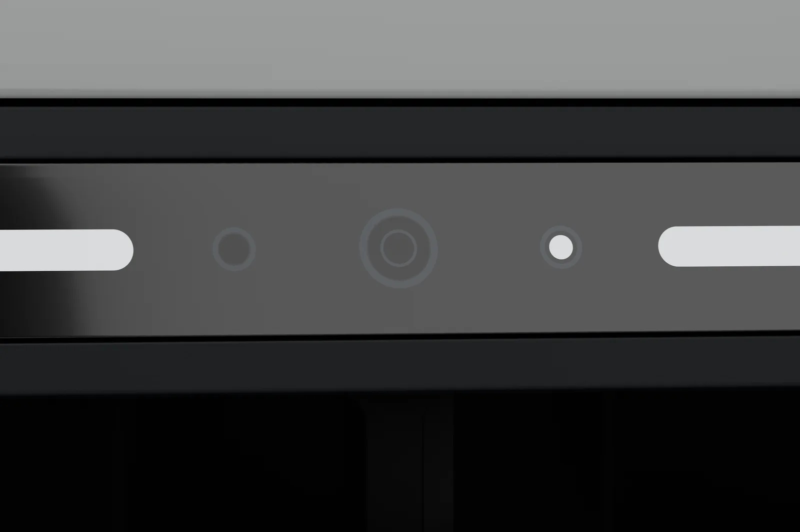
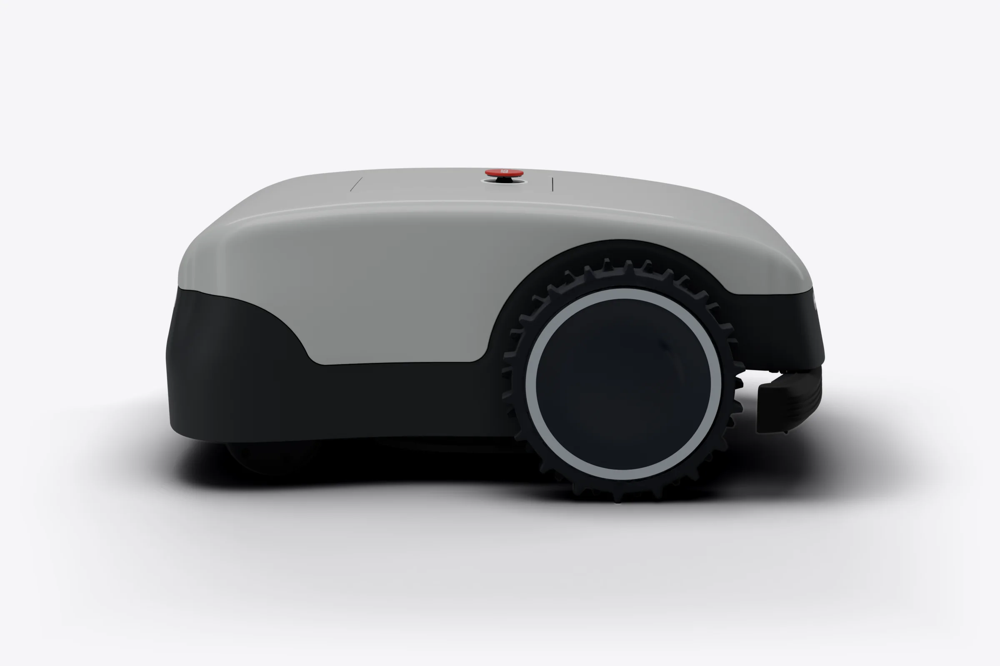
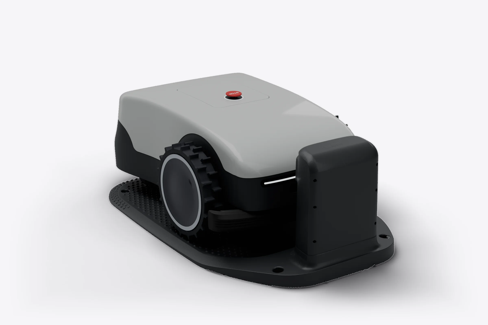
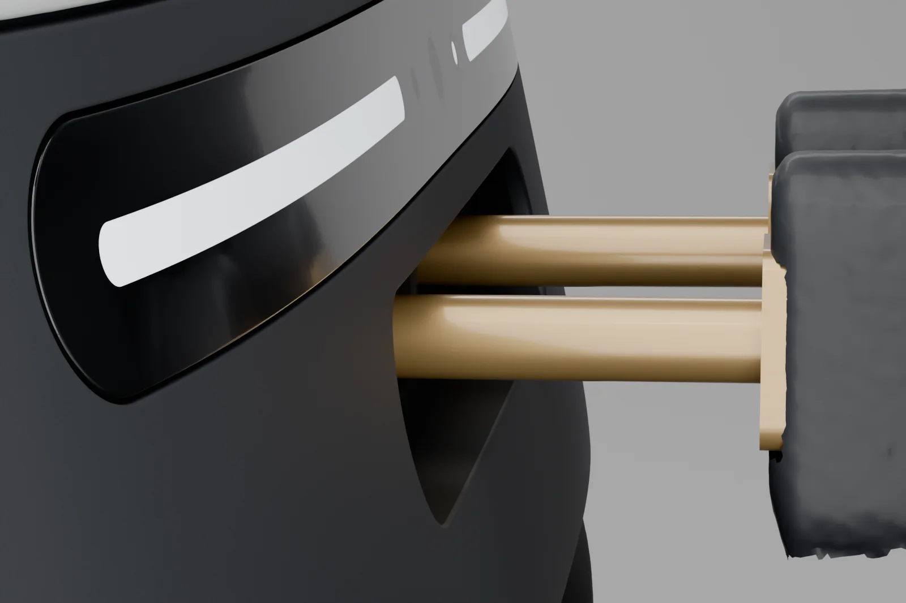
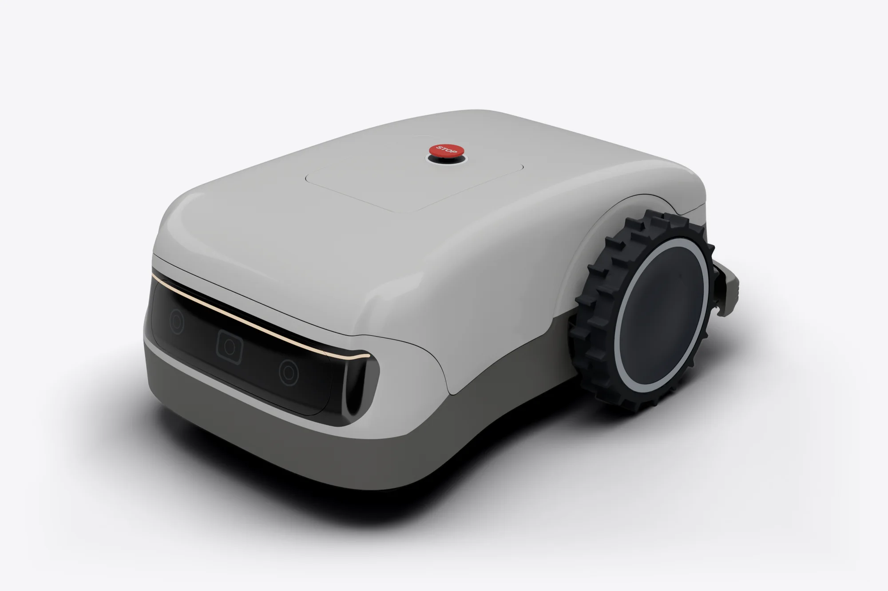

自动割草机器人
Orbit
200 mm 割幅30–60 mm 割草高度*草坪最大 1000 m²*
割草
一次割 200 mm 宽
刀盘在底盘正中，三片刀片用销轴挂在刀盘边上。转起来时离心力把刀片甩直；碰到石头或树根，刀片会向后折回，不会崩口。刀片两面开刃，一面钝了翻过来再用。
割草高度在屏幕或 App 里设定，刀盘电机整体升降，每档 5 mm。*
割幅
割草高度，7 档*
铰接刀片，可翻面
先割一圈边
从充电座出发，先沿草坪边界割一圈，把边和角割整齐。
再一行一行往返
中间按平行线往返，相邻两行重叠 2 cm，不留没割到的草带。每次换一个方向割，草坪上不会压出固定的车辙。
绕开设好的禁区
花坛、水池、菜地在 App 里画成禁区，规划路线时直接绕开。
割草效率*
一次充电的工作时间*
草坪最大面积*
避障
看见障碍，提前绕开
车头的烟色镜片后面是摄像头和红外测距。摄像头分辨草坪的边界，也认得出地上的玩具、水管和宠物；红外测距补上近处的距离。万一还是碰上了，前保险杠里的碰撞开关会让它马上停下，后退，换个方向。
- 摄像头识别草坪边界和障碍物，用来导航，不需要埋边界线。*
- 红外测距测量前方近处物体的距离，光线暗时也能用。
- 碰撞开关前保险杠浮动安装，被推动就触发停车。

地形
大轮子，上得了坡
两个驱动轮直径 229 mm、宽 54 mm，胎面是深齿纹，湿草和松土上也抓得住。两个轮子各有一个电机，可以原地转向，在窄的地方也能掉头。车尾是两个 100 mm 的万向轮。

驱动轮直径
最大坡度，约 19°*
能越过的台阶*
回充
电量低了，自己回去充
电量不够或到了计划的结束时间，它沿边界开回充电座，车头朝前停进去。充满电后回到中断的那一行，接着割。


充满电*
充一次电的工作时间*
安全
抬起、翻倒或按下 STOP，刀盘都会停
车里有抬起和倾翻传感器，割草机被抬离地面或翻倒时，刀盘立即停转。盖板上的红色 STOP 键从各个方向都按得到；按下即停，再往下按，盖板弹开。盖板打开时同样不能割草，重新启动要在屏幕上确认。
STOP 键按 EN 50636-2-107 第 20.101.4 条对尺寸和颜色的要求设计。
键帽直径
高出盖板
按在任何位置所需的力
按键行程
屏幕和按键在盖板下面
平时盖板合着，雨水和草屑进不去。
盖板自己打开
按下 STOP 后，弹簧把盖板顶起，阻尼让它慢慢停在 75°。
四周有密封条
盖板下面一圈密封条，再下面是带排水口的集水槽。
换刀片不用拆外壳
把割草机侧放，每片刀用一颗螺丝固定在刀盘上，拧下来就能换。*
外壳也能整个取下
上盖直接向上拔下。拧下 14 颗螺丝、拔下两个插头，车身也能取下，底盘上的部件全部露出来。
常年放在室外
分缝防水
上盖和车身之间只有一条 0.8 mm 的分缝，缝下面是一道防水迷宫，进来的水顺着槽流到外面。
灯组密封
镜片和灯壳焊成一个整体，四周有密封泡棉，带透气膜，不会起雾。
车内排水
盖板下的集水槽和车身台面最低处都开了排水口，水不会积在车里。
防护等级需要样机喷淋测试确认。
浅色上盖，深色车身
上盖和车身是两个零件，颜色的分界就是分缝。
分缝绕驱动轮一圈
缝宽 0.8 mm，和轮毂同心。
前后同样的灯带
17.5 mm 高的烟色镜片。车头这段后面是摄像头和指示灯。
六种配色
上盖和车身一起换色，STOP 键始终是红色。

同一底盘的另一款外观
Horizon
缎面银上盖，离地 180 mm 一条水平分缝，分缝下面一条细灯线。割草、导航和回充部分与 Orbit 相同。


规格
割草
- 割幅
- 200 mm刀盘居中，3 片铰接刀片，两面开刃
- 割草高度
- 30–60 mm*7 档，电动调节
- 草坪面积
- 最大 1000 m²*割草效率约 130 m²/小时
- 路径
- 沿边一圈 + 平行往返相邻两行重叠 2 cm，每次换方向
导航与避障
- 导航
- 视觉导航*摄像头识别草坪边界，不需要埋边界线
- 避障
- 摄像头 + 红外测距前保险杠碰撞开关
- 禁区
- 在 App 中设置*
行走
- 驱动轮
- Ø229 × 54 mm深齿纹胎面，双电机，可原地转向
- 万向轮
- Ø100 mm × 2
- 坡度
- 35%*约 19°
- 越障
- 20 mm*
电池与回充
- 工作时间
- 90 分钟*
- 充电时间
- 75 分钟*
- 回充
- 两针式充电座对准容差：左右 ±16 mm，上下 ±3.5 mm，偏斜 2°
安全
- STOP 键
- Ø40 mm，红色高出盖板 10.7 mm，按压力 ≤ 30 N
- 停机条件
- 抬起、倾翻、盖板打开、碰撞刀盘立即停转
机身
- 尺寸
- 666 × 471 × 291 mm长 × 宽 × 高
- 噪音
- ≤ 60 dB(A)*
- 防水
- 分缝防水迷宫 + 密封灯组防护等级待样机测试
标 * 的是设计目标值，需要样机测试确认。尺寸、轮径和充电对准容差取自设计模型；底盘、驱动轮、万向轮和前保险杠沿用原有部件。
3D 模型
可以旋转、打开盖板、把外壳拆开看。